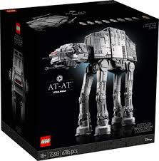
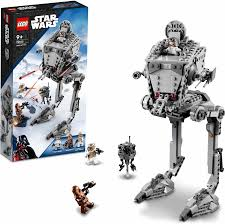

star wars
LEGO STAR WARS
STRONY KTÓRE UMOŻLIWIAJĄ KUPNO WYBRANEGO PRODUKTU:
strona LEGO
alegro
media expert
CIEKAWOSTKI:
-Lego Star Wars – zestawy klocków Lego oparte na filmach z serii Gwiezdnych wojen. Pierwszy zestaw został wydany w 1999.
-Jako pierwsze wyprodukowano klocki związane z „Epizodem I” – m.in. ścigacz Anakina znany z pustynnych scen na Tatooine czy statek, którym młody Jedi latał w finale filmu na Naboo, a także „Lightsaber Duel”, zestaw odtwarzający pojedynek między Qui-Gon Jinnem a Darth Maulem.22 lip 2019
-W kategorii LEGO Star Wars znajdziesz 591 zestawów LEGO z czego największy ma aż 7541 elementów.
-Minifigurka Jar Jar Binksa z 1999 była pierwszą w historii, która miała unikalną, rzeźbioną głowę.
WIĘCEJ NA STRONIE:
WIĘCEJ CIEKAWOSTEK
HISTORIA LEGO STAR WARS
HISTORIA LEGO STAR WARS
strona główna
PRZYKŁADOWE PRODUKTY:

